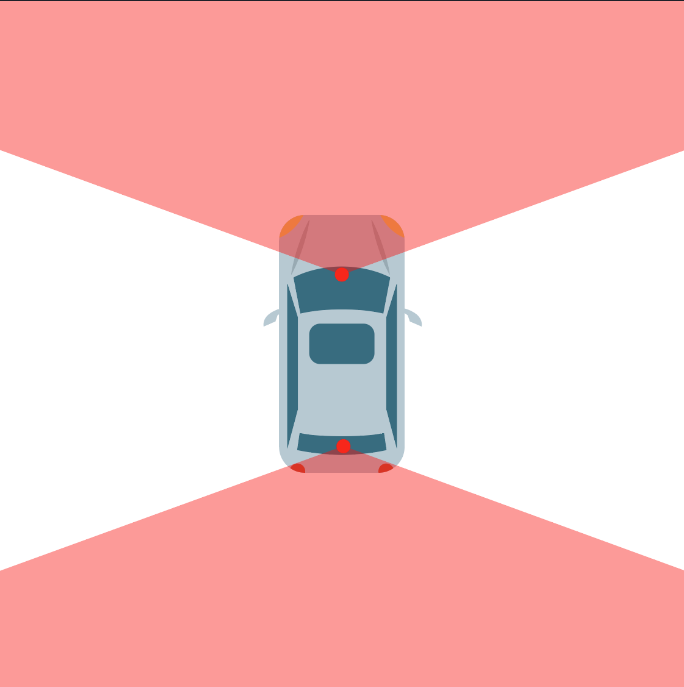

APV Veendorp
| Overheidsorganisatie | Hoge Raad Veendorp |
| Citeertitel | Wetboek Veendorp Roleplay |
| Vastgesteld door | Hoge Raad |
| Onderwerp | Openbare Orde & Veiligheid |
Opmerkingen met betrekking tot de verordening
Het Wetboek van Strafrecht, specifiek bedoeld voor Veendorp Roleplay, wordt hierbij ingetrokken en vervangen door deze APV.
Algemene Bepalingen
A1 - Reikwijdte
- Deze Algemene Plaatselijke Verordening (verder aangeduid als APV) is bedoeld als aanvulling op het Nederlands Recht en heeft betrekking op het eiland, de gemeente, en de stad Veendorp Roleplay.
- De APV biedt een indicerend kader voor eventuele bestraffing in-game (“in RP”), maar is verder bedoeld voor het afhandelen van straffen buiten de RP om.
A2 - Geldigheid
- Bij veranderingen van een wetgeving na het tijdstip waarop het feit begaan is, worden de voor de verdachte meest gunstigste bepalingen toegepast.
- Het is voor een staff-lid niet toegestaan om mee te beslissen over een zaak die over hunzelf, vrienden en/of familie gaat. Dit om te versterken dat een zaak op een eerlijke en rechtvaardige manier behandeld wordt.
- Indien er tegen staff gelogen wordt en dit met hard bewijs bewezen wordt, door bijvoorbeeld logbestanden, kan er gekozen worden de straf te verzwaren.
A3 - Strafbepaling
-
De straffen zijn onderverdeeld in zes categorieën (waarschuwingen):
⦁ 1e Categorie: Mondeling aanspreken en notitie in het adminpanel.
⦁ 2e Categorie: schriftelijke waarschuwing en een taakstraf van 100 taken.
⦁ 3e Categorie: minimaal 1 / maximaal 7 dagen ban
⦁ 4e Categorie: minimaal 8 / maximaal 14 dagen ban
⦁ 5e Categorie: minimaal 15 / maximaal 30 dagen ban
⦁ 6e Categorie Permanente Ban. -
Waarschuwingen zijn 3 maanden geldig, daarna vervallen ze automatisch. Er kan door een stafflid gekozen worden om straffen te verhogen en/of te verlagen op basis van de context, situatie of eerdere straffen/waarschuwingen van de overtreder in kwestie. Wanneer je het niet eens bent met een oordeel van een stafflid kan je hiervoor een ticket aanmaken.
-
Een mondelinge waarschuwing dient in een notitie bij deze persoon aangegeven te zijn, anders is deze niet geldig.
- Het omzeilen van een straf zal resulteren in een permanente ban.
- Bans worden uitgedeeld op basis van de GTA licentie en IP-adres en geldt als zodanig voor alle gebruikers van deze kenmerken.
A4 - Aanvullende Wetten en regels
- Aanvullend op de APV is er het Wetboek Veendorp Roleplay (WVR), waarin alle wetten, artikelen en bepalingen zijn opgenomen die gelden in Veendorp Roleplay.
- In dit Wetboek is opgenomen alle criminele feiten, de bijbehorende boetes, gevangenisstraffen enzovoorts.
- Dit Wetboek heeft, net als de APV, een basis in het Nederlands Recht.
- Het Nederlands Recht is zodoende leidend, tenzij er een Wet of Bepaling is opgenomen in de WVR. Dan is deze leidend.
- Dit wetboek is, net als deze APV en conform de rechtsstaat, ten alle tijden openbaar.
- De waarde voor donatievoertuigen is bepaald als volgt; €250.000,00 voor sportauto's, €100.000,00 voor SUV en €500.000,00 voor supercars.
Overtredingen - Verstoring openbare orde (RP)
Artikel 1 - Algemene Roleplay Richtlijnen
- Het is verboden om een roleplay van zeer slechte kwaliteit uit te spelen, of roleplay verstorend gedrag te vertonen.
- Het is niet toegestaan om opzettelijk de roleplay zodanig te vormen dat er een oneerlijke of onrealistische draai aan het verhaal gegeven wordt, of de roleplay van de andere partij zelf invullen door een onrealistische dwang.
- Het onnodig mishandelen, vermoorden (RDM), uitlokken en/of anderen lastig vallen zonder verdere intentie tot roleplay is niet toegestaan. Dit geld ook voor dieren.
- Hij/zij die geen waarde hecht aan het leven van het karakter dat hij/zij speelt (No Value of Life), zal bestraft worden.
- Het is verboden om een erotische roleplay (ERP) uit te voeren of aan te gaan.
- Indien het karakter overleden is, wordt er verwacht dat hij/zij de laatste roleplay vergeten is. Het karakter mag ook niet naar het gebied waar hij/zij overleden is terugkeren, dit is aangeduid met een rode cirkel op de kaart voor 30 minuten na het overlijden.
- Het is te allen tijde verboden om je karakter te breken. Hiermee bedoelen we dat je een term gebruikt die gezien wordt als OOC (Out Of Character)
- Het is niet toegestaan om “/looc” foutief te gebruiken.
- Het uitvoeren van een zelfmoord scenario is niet toegestaan, mits er goedkeuring voor is geweest vanuit staff.
- Het is verboden om door middel van de Safe Zone te ontkomen aan illegale activiteiten en/of roleplays.
- Het is verboden om een individu schade aan te richten, te ontvoeren, uitbreken, overvallen, aanrijden of vermoorden in een Safe Zone, tenzij er daadwerkelijke roleplay (die aan te tonen is) aan gekoppeld zit.
⦁ Enkele voorbeelden van lid 1 en lid 2 zijn:
⦁ Tijdens een achtervolging je voertuig in de garage zetten om te voorkomen dat je je voertuig kwijt raakt;
⦁ Een agent ontvoeren om een signalering te verwijderen of om iets te bekijken in het politiesysteem (MEOS).
⦁ Medewerkers van de overheidsdiensten dwingen om een (bewusteloos) persoon te fouilleren, items (zoals wapens) af te nemen en af te geven aan jou of iemand anders.
Bij bovenstaande regels geld een straf van minimaal categorie 2 tot maximaal categorie 6.
Artikel 2 - Cheats, Exploits & Meta-gaming
-
Hij/zij die gebruikmaakt van software/hulpmiddelen (cheats) van derde partijen om profijt te krijgen in het spel, wordt gestraft door middel van een permanente ban. Deze regel geldt ook voor de Discord client zelf, dus gebruik van clients als BetterDiscord is niet toegestaan.
-
Hij/zij die moedwillig een bug en/of exploit misbruikt om voor zichzelf of anderen profijt te behalen of in-game functionaliteiten omzeild, ongeacht in welke middelen, zal per direct gestraft worden met een permanente ban.
-
Informatie verkregen buiten het karakter om (alle informatie die niet verkregen is door jouw karakter binnen FiveM) mag niet gebruikt worden door het karakter.
-
Het is niet toegestaan om externe discords te gebruiken voor roleplay gerelateerde zaken, zonder dat hier toestemming is voor gegeven vanuit staff (denk hierbij aan het gebruik van sheets en andere onderlinge zaken). Eigenaren van externe discords waarin meta-gaming voorkomt, zullen een permanente ban ontvangen.
-
Wanneer je met meerdere mensen die op Veendorp Roleplay spelen in een voicecall zit, is streamen niet toegestaan en moet je gedeafened en gemute zijn. Als één persoon in-game is en de rest niet en je besluit om alsnog in een call te zitten zonder dat je gedeafened/gemute bent, ben je dus ook in overtreding van deze regel.
-
Het streamen van de main server in een discord server is nooit toegestaan, tenzij je expliciet toestemming hebt van een stafflid.
Bij bovenstaande regels geld een straf van categorie 6.
Artikel 3 - (Overheids) kleding
- Bij het aanmaken van je personage dient je kleding veranderd te worden. Je mag niet dus niet met de starters kleding de server betreden. Verder dien je ervoor te zorgen dat je karakter er realistisch uitziet, armen bij de outfit kloppen en er geen lichaamsdelen ontbreken bij jouw personage.
- Er wordt geacht dat de kleding wordt gedragen die is verstrekt door de baas voor het uitvoeren van het beroep.
- Hij/zij die als niet ambtenaar kleding draagt van één van de overheidsbanen is verboden, tenzij er een goede roleplay aan vast zit, welke goedgekeurd is door een stafflid
- Officiële kleding verstrekt vanuit Veendorp Roleplay bedoeld voor specifieke groeperingen mag niet door anderen gebruikt worden of als starters kleding gekozen worden, tenzij hier een sterke roleplay aan verbonden is.
Bij bovenstaande lid 1 en 2 staat een straf van categorie 1
Bij bovenstaande lid 2 en 3 staat een straf van categorie 2
Artikel 4 - Combatlogging
- Het is verboden tijdens een roleplay moedwillig de game verlaten zonder geldige reden. Er wordt verwacht dat je binnen 5 minuten terug bent. Doe je dit niet, zal er een ban van 7 dagen of meer uitgedeeld worden.
- Het is de bedoeling, als men de game wil verlaten tijdens een roleplay, ervoor te zorgen dat de mensen die deelnemen aan de roleplay hiervan op de hoogte zijn. Probeer het eerst via "/looc {uitleg}" te vermelden. Als dat niet werkt kan het via spraak vermeld worden.
Bij bovenstaande regels geld een straf van minimaal categorie 3 tot maximaal categorie 6.
Artikel 5 - Nederlandse Taal
- Er wordt van spelers verwacht de Nederlandse of Engelse taal te beheersen. Indien iemand de Nederlandse of Engelse taal niet beheerst, is deze persoon niet welkom op de server.
- Andere talen dan het Nederlands en het Engels mogen niet gebruikt worden op een provocerende of beledigende manier gedurende de roleplay.
- Tijdens een staff- of overheids gesprek dient de persoon te allen tijde Nederlands te spreken, indien de medewerker dit wenst. Mocht de persoon de Nederlandse taal niet beheersen, dient er iemand aanwezig te zijn die namens hem in het Nederlands kan spreken.
Bij bovenstaande regels geld een straf van minimaal categorie 3 tot maximaal categorie 6.
Artikel 6 - Report gebruik
- Er wordt van mensen verwacht gebruik te maken van “/report” om overtredingen van regels te melden. Dit zodat de overtreder hiervan niet op de hoogte is en de eventuele roleplay hierdoor niet beïnvloed wordt.
- Het is als je een report maakt niet de bedoeling om dit in game te melden aan mensen. Wanneer dit wel gedaan wordt, kan een stafflid waarschijnlijk daardoor geen straffen uitdelen omdat de persoon zal doorhebben dat er iemand meekijkt. Ook wordt het vermelden van het aanmaken van een report gezien als FailRP (OOC gaan in RP).
- Het spammen van reports, het onnodig aanmaken van reports en discussiëren in reports is verboden.
Bij bovenstaande regels geld een straf van minimaal categorie 2 tot maximaal categorie 6.
Artikel 7 - Alt Characters
- Het is verboden alt characters aan te maken met de intentie het start bedrag over te schrijven naar het account waar normaal op gespeeld wordt. Hiernaast is het ook verboden om meer dan 3 alt accounts aan te maken.
- Het is niet toegestaan om een alt character te maken om, bijvoorbeeld, criminele activiteiten te ondernemen. Wanneer een van je personages bij de overheid werkt.
- Hoewel alt characters toegestaan zijn, is het verboden om alt accounts te maken, of te multiboxen met alt characters. Dit zal worden bestraft met een permanente ban van alle (alt) accounts.
Bij bovenstaande regels geld een straf van minimaal categorie 3 tot maximaal categorie 6.
Artikel 8 - Voertuig handelaar / Voertuig meetings
- Een voertuig handelaar mag enkel uitgevoerd worden wanneer hiervoor goedkeuring is vanuit justitie.
- Een voertuig handelaar mag:
⦁ Maximaal 10 voertuigen in hun “showroom” zetten.
⦁ Zich enkel vestigen op een door justitie aangewezen locatie.
⦁ Dient officiële vergunningen te hebben, ondertekend door een lid van justitie, waarin de locatie vermeld staat. - Bij voertuig meetings mogen maximaal 20 voertuigen aanwezig zijn.
Bij overtreding van bovenstaande regels word er in-game gehandeld door justitie/politie.
Artikel 9 - Gebruik van voertuigen
- Je mag als burger geen overheidsvoertuigen besturen, tenzij er in de roleplay een goede reden voor is of wanneer er toestemming is gegeven door een stafflid.
- Er wordt geacht van mensen geen gebruik te maken van baan voertuigen voor illegale bezigheden, tenzij hier goedkeuring voor is gegeven vanuit een stafflid voor een roleplay scenario.
- Het is niet toegestaan met voertuigen gebouwen te betreden die daar niet voor bedoeld zijn.
- Het is niet toegestaan om jouw voertuig als wapen te gebruiken (VDM).
- Er wordt van de speler verwacht dat hij/zij met een realistische snelheid langs drukke locaties rijdt, denk hierbij aan het centrum van Veendorp Roleplay.
Bij overtreden van lid 1, 2 & 4 geld een straf van minimaal 3de categorie.
Bij overtreden van lid 3 geld een straf van minimaal 2de categorie.
Artikel 10 - Belediging
- Persoon die scheldt met hedendaags relevante ziektes, racistische opmerkingen, of andere ongepaste opmerkingen, wordt bestraft door middel van een permanente ban. Dit is ook van kracht op steam-, discord- en karakternaam.
- Het is tevens niet toegestaan om in de Veendorp Roleplay erkende platformen toxic, uitlokkend, haatzaaiend of opruiend gedrag te vertonen.
Op lid 1 staan de volgende straffen voor het schelden met hedendaagse ziektes, bij de eerste keer zal dat bestraft worden doormiddel van een ban van twee weken. Bij de tweede keer zal hij/zij bestraft worden met 3 maanden ban, en derde keer zal het een permanente verbanning zijn. Op lid 2 staan straffen van minimaal de 3de categorie.
Artikel 11 - Overvallen & Oplichten
- Het overvallen of oplichten van mensen is verboden, dit mag alleen wanneer een persoon bezig is met criminele activiteiten.
-
Met betrekking tot de volgende situaties is overvallen of oplichten niet toegestaan:
⦁ Het stelen/overvallen van loodsen (scammen)
⦁ Spelers te overvallen, te ontvoeren of negatief te bejegenen bij safezones
⦁ Facturen en/of andere items welke gerelateerd aan een baan zijn
⦁ Overheids voorwerpen
⦁ Onder dwang iemand zijn huis betreden en dan leegroven
⦁ Voertuigen zonder enige roleplay
⦁ Nieuwe spelers -
Voertuigen kunnen ook niet meer gebruikt worden bij illegale deals en kunnen enkel met legaal geld gekocht worden.
- Het is de verantwoordelijkheid van de kopende partij om te controleren of de aangeboden aanpassingen (ook wel bekend als tunes) op het voertuig aanwezig zijn ten tijde van overdracht van het voertuig in een modshop.
- Het counteren van een overval en/of gijzeling is niet toegestaan van zodra politie en/of KMAR ter plaatse is.
- Het oplichten van een persoon, verkopen en inkopen van wapens, verkopen en inkopen van drugs, vermoorden of ontvoeren van een persoon en het gebruiken van een wapen zijn in een appartement verboden.
- Het wegrijden na een overval is ten alle tijden verboden, overvallers dienen te wachten op hulpdiensten om zodoende de RP aan te gaan.
Straffen voor bovenstaande regels betreffen minimaal 3de categorie tot maximaal 6de categorie.
Artikel 12 - Gedrag van Ambtenaren
Onder ambtenaar wordt verstaan de spelers die één van de volgende instanties uitvoert, deze zijn weergegeven in het F10 menu:
⦁ Politie
⦁ Koninklijke marechaussee
⦁ Justitie
⦁ Ambulance
⦁ ANWB
⦁ Taxi
⦁ Brandweer
⦁Voor een ambtenaar is het niet toegestaan zich bezig te houden met illegale bezigheden.
⦁Het is niet toegestaan om door de politie in beslag genomen objecten door te handelen naar spelers. Ditzelfde is ook van toepassing op alle andere overheidsobjecten en op informatie die de (ex-)medewerker heeft verkregen tijdens zijn carrière bij de desbetreffende overheidsdienst. Dit geldt ook nadat de desbetreffende persoon ontslag heeft genomen of ontslagen is.
⦁ Op lid 3 geldt een uitzondering voor medewerkers van de politie of koninklijke marechaussee met een speciale vergunning. Deze leden mogen wel hun wapens buiten dienst behouden.
Straffen voor bovenstaande regels betreffen minimaal 3de categorie tot maximaal 6de categorie.
Artikel 13 - Gedrag tegen overheidsmedewerkers
- Meldingen naar een overheidsinstantie dienen te allen tijde realistisch en uitgebreid te zijn.
- Roleplay met de ANWB, Brandweer, Politie en Ambulance moet uitgebreid en realistisch zijn. Ook dien je mee te werken met de roleplay en mag je de medewerkers niet forceren om voertuigen te repareren of spelers te reviven. De medewerkers zijn te allen tijde leidend in hun roleplay.
- Het is niet toegestaan om een melding te maken naar een overheidsinstantie met de intentie om degene die hierop reageert te vermoorden en/of te ontvoeren.
- Er moeten ten allen tijden 4 overheidsmedewerkers binnen een baan beschikbaar blijven nadat er één ontvoerd is, dus als er 5 agenten aanwezig zijn mag er 1 ontvoerd worden, als er 4 aanwezig zijn mag er geen ontvoerd worden.
- Een uitzondering op lid 4 geldt voor de ambulance & brandweer. Hierbij moeten er te allen tijde 5 medewerkers beschikbaar blijven. Kortom, als er 6 ambulance of brandweer medewerkers aanwezig zijn, dan mag er 1 à 2 ontvoerd worden.
- Het is toegestaan om een agent te ontvoeren zodat je jouw voertuig uit de opslag kan halen, hiervoor dien je wel het bedrag af te lossen die hiervoor openstaat. Hierbij ontneem je wel het recht op een advocaat en/of hOVJ. Het is verboden om tussen 00:00 en 10:00 een voertuig uit de opslag te forceren.
Straffen voor bovenstaande regels betreffen minimaal 4de categorie tot maximaal 6de categorie.
Artikel 14 - Roleplay & Ledenaantal Criminele Organisaties
- Onder "criminele organisaties" vallen alle officiële groepen gevestigd in Veendorp Roleplay.
- Criminele organisaties mogen een maximaal ledenaantal van 25 personen hebben. Hierin is een vrije keuze voor het aantal leden met de "hangaround" rang.
- Een voorwaarde voor het samenwerken tussen criminele organisaties, is dat er geen volledige samenwerking tussen alle organisaties ontstaat en dat dit niet gebeurt tijdens het witwassen van geld.
- Wanneer officiële organisaties een samenwerking aangaan met een andere officiële organisatie dan dient dit gemeld te worden volgens het format in het daarvoor aangemaakte kanaal in de Veendorp Roleplay Discord.
- Wanneer de leden in een server supported organisatie zodanig opvallen op een negatieve manier (denk aan meerdere malen combat gedrag in plaats van roleplay, teveel warnings, etc.), zullen de Criminele Aanspreekpunten, Head Staff of Hoge Raad beslissen over een gepaste straf jegens deze organisatie. Bij criminele organisaties kan dit zelfs leiden tot een volledige opschorting van de groep.
Straffen voor lid 1 tot lid 4 betreffen minimaal 3de categorie tot maximaal 6de categorie.
Artikel 15 - Ontsnappen uit het cellencomplex / gevangenis
- Het is toegestaan om te ontsnappen uit het cellencomplex, echter dient hier een geldig roleplay scenario aan gekoppeld te worden. Dit is ter beoordeling aan een stafflid.
- Het is niet toegestaan om te ontsnappen of jezelf uit te laten breken indien er is afgesproken om het roleplay scenario op een later tijdstip voort te zetten, bijvoorbeeld vanwege tijdgebrek of andere beperkingen.
- Het is verboden om tussen 01:30 en 10:00 uit het cellencomplex te breken.
- Er moet ten allen tijden 5+ politie beschikbaar zijn, als er 4 politie aanwezig zijn mag je niet ontsnappen.
Straffen voor bovenstaande regels betreffen minimaal 3de categorie tot maximaal 6de categorie.
Artikel 16 - Witwassen, Winkel- en bankovervallen & overige criminaliteit
-
Witwassers overvallen is toegestaan wanneer minimaal één van onderstaande punten van toepassing is.
⦁Hij/zij gezichtsbedekking of beschermende kleding zoals een body armor draagt.
⦁Het kenteken van een voertuig dat overeenkomt met het kenteken dat is verstuurd in het deepweb kanaal dat hiervoor bestemd is en niet ouder is dan 1 uur.
⦁Een persoon verdachte handelingen doet bij een afleverpunt die niet passen bij de baan die de persoon op dat moment uitvoert. -
Witwassen mag enkel in de voertuigen die je krijgt van het depot.
- De overvaller dient op het moment van overvallen beelden te kunnen overhandigen aan de staffleden.
- Het campen of opwachten op witwas locaties en het depot is verboden.
- Een gijzelaar mag geen kennis of vriend van je zijn, maar moet een onbekend persoon zijn.
- Probeer op alle mogelijke manieren een vuurgevecht te vermijden en onderhandel eerst met de politie.
- Een liquidatie mag niet uitgevoerd worden zonder dat het slachtoffer op de hoogte is van de reden hierachter. Er dient dus aan het slachtoffer duidelijk gemaakt te worden, terwijl hij/zij nog leeft, waarom diegene geliquideerd wordt.
- Het campen op een niet actieve drugs locatie is niet toegestaan, zowel op land als op het eiland.
- Het campen van de witwas startlocatie is niet toegestaan. Overvallen van een witwas bus is toegestaan als de persoon fouten maakt in kledij, handelingen, duidelijk onder begeleiding rijden & andere handelingen die niet bij het voertuig passen.
- Het campen van de startlocatie "illegale transport" is niet toegstaan, toegestaan is wel te zoeken in het gebied van Sandy.
- Het campen bij de illegale job startlocatie is toegestaan.
- Rippen op startlocatie drugsverkoop is niet toegestaan. Overvallen van een drugsverkoop bus is toegestaan als de persoon fouten maakt in kledij, handelingen, duidelijk onder begeleiding rijden & andere handelingen die niet bij het voertuig passen.
Straffen voor bovenstaande regels betreffen minimaal 3de categorie tot maximaal 6de categorie.
Artikel 17 - Officiële gang regels
- Het is verboden om nepmeldingen te maken in de omgeving van een gang huis met de intentie tot uitlokken van de criminelen of het in de problemen werken van de rivaliserende groep.
- Het in beslag nemen van een voertuig door een officiële gang hoort met goede of langdurige roleplay te gebeuren, en niet met de intentie om geld te verdienen.
- Wanneer er twee weken lang geen roleplay aan de inbeslagname gebonden wordt, is het toegestaan om het voertuig weer gratis uit de garage te halen.
- Het confisqueren van items, wapens en geld van een speler is alleen toegestaan als hier een roleplay aan is verbonden. Het confisqueren van overheids objecten is niet toegestaan.
Straffen voor bovenstaande regels betreffen minimaal 4de categorie tot maximaal 6de categorie.
Artikel 18 - Beeldmateriaal
-
Bodycam beelden zijn op de volgende manier toegestaan:
⦁ Overheidsdiensten zijn uitgerust met bodycams.
⦁ Medewerkers van alle overheidsdiensten zijn verplicht om de bodycams visueel te dragen als zij de bodycam beelden als bewijs willen gebruiken.
⦁ Burgers kunnen alleen met hun telefoon filmen.
⦁ Alle voertuigen inclusief overheidsvoertuigen kunnen enkel met een dashcam voor- of achteruit filmen. -
De bovengenoemde voorbeelden zijn bedoeld in de context van Roleplay. Voor bewijsvoering in een ticket of report is alle beeldmateriaal toegestaan.
Artikel 19 - Jobhoppen
- (Ex-)leden van een criminele organisatie dienen minimaal 72 uur te wachten nadat ze ontslag hebben genomen/ontslagen en/of samenwerken met een andere criminele organisatie voordat zij aangenomen mogen worden bij een overheidsbaan of een andere criminele organisatie.
- (Ex-)medewerkers van een overheidsbaan dienen minimaal 72 uur te wachten nadat ze ontslag hebben genomen/ontslagen en/of samenwerken met een andere criminele organisatie voordat zij aangenomen mogen worden bij een andere overheidsbaan of een criminele organisatie.
- Het is voor de leidinggevenden van overheidsbanen en criminele organisaties verplicht om een document bij te houden met informatie omtrent de in- en uitdiensttreding van hun medewerkers ten behoeve van de handhaving van dit artikel.
Straffen voor bovenstaande regels betreffen minimaal 4de categorie tot maximaal 6de categorie.
Narcopolis
Onderstaande regels tellen alleen op Narcopolis
Artikel N-1 - Schieten vanaf het vasteland en water
- Het is verboden om vanaf het vaste land op de patrouillerende schepen of heli's te schieten.
- Er mag op binnenkomende vluchten en schepen geschoten worden, die niet afkomstig zijn van de koninklijke marechaussee.
Straffen voor bovenstaande regels betreffen minimaal 3de categorie tot maximaal 6de categorie.
Artikel N-2 - Inladen van helikopers/vliegtuigen
- Wanneer jij drugs wilt inladen in een vliegtuig of helikopter moet het vliegtuig of de helikopter binnen een straal van 50 meter van een helipad of landingsbaan staan.
- De sea sparrow en dodo mag wel volgeladen worden op open water.
Straffen lid 1 betreffen minimaal 2de categorie tot maximaal 6de categorie.
Artikel N-3 - Samenwerking criminele organisaties
- Op Narcopolis is het voor een officiële groep niet toegestaan om samen te werken met een officiele of onofficiele groep of persoon.
- Uitzondering op lid 1 is er voor het kopen en verkopen van drugs. Dit mag wel gedaan worden op het eiland tussen verschillende groepen en personen.
Straffen lid 1 betreffen minimaal 2de categorie tot maximaal 6de categorie.
Artikel N-4 - Campen van een niet actieve drugslocatie
- Het campen van een niet actieve drugslocatie is niet toegestaan op het eiland.
- Zodra je binnen 1000 meter van de pluk bent, kan dit onder campen vallen. Dit is ter beoordeling aan een stafflid.
Het is niet toegestaan om constant op en neer te rijden naar een niet-actieve drugs locatie, om zo de camp regel te omzeilen. Als dit blijft gebeuren zullen er sancties komen. Dit is ter beoordeling aan een stafflid.
Straffen lid 1 betreffen minimaal 1de categorie tot maximaal 6de categorie.
Tijdelijke bepalingen
⦁ Slotbepaling: Regels in het kort
⦁ Geen FailRP (Roleplay van zeer slechte kwaliteit, niet realistisch)
⦁ Geen VDM (Vehicle deathmatch, je wagen als wapen gebruiken).
⦁ Geen RDM (Random deathmatch, zonder goede reden mensen of dieren dood slaan en/of schieten).
⦁ Geen Cheats (Uiteraard is het niet toegestaan om cheats te gebruiken om jezelf een voordeel te geven en dit zal dan ook resulteren is een regelrechte ban)
⦁ Geen Exploits (Bugs / Misstanden misbruiken om hier zelf en/of voor andere profijt uit te halen).
⦁ Geen server/roleplay verstorend gedrag (Mic spammen, trollen etc).
⦁ Geen Metagaming (Gebruik maken van informatie wat jouw karakter niet kan weten en of andere discord kanalen dan de main discord).
⦁ Geen Cop-baiting (politie uitdagen/uitlokken).
⦁ Geen Spam (de chat vol spammen met nutteloze berichten)
⦁ Geen Combat Logging (Zomaar de server verlaten tijden bijvoorbeeld een ontvoering).
⦁ Niet overdreven schelden. (Geen Kanker en dergelijke, maakt niet uit of het bij je karakter hoort of niet. Hier wordt extra streng op gestraft.)
⦁ Houd het realistisch, ga niet met een Lamborghini door de woestijn racen met 200 km/h, of met auto's gebouwen in.
⦁ Ga zuinig om met je leven, dus niet zomaar zelfmoord plegen zonder reden.
⦁ Wanneer je bent gerespawned herinnert jouw karakter niets van wat er met je gebeurd is. Je weet nog wel dingen als je Baan en je vrienden maar je weet niet hoe je bent doodgegaan of door wie en dergelijke.
⦁ Het is verboden om OOC te praten/je karakter te breken.
⦁ Het is VERPLICHT een microfoon te hebben om te kunnen communiceren en Roleplayen.
⦁ Nederlands kunnen spreken is verplicht.
⦁ Je kunt alleen contant geld stelen bank geld kan niet gestolen worden.
⦁Werk je bij de overheidsdiensten dan geldt er een zero tolerance beleid met bate tot drugs of criminele activiteiten. Wordt je ingame gepakt door een agent of ziet een stafflid dit, dan betekent dit einde baan. Het is daarnaast verboden om overheidsvoorwerpen te verkopen of weg te geven en dit is ban-waardig. Denk hierbij aan wapens, medkits, of in beslag genomen voertuigen en drugs, ook is het verboden om je beroep in je voordeel te gebruiken bij criminele activiteiten.
⦁ Gebruikt /report om mensen te rapporteren die niet naar de regels luisteren. (Maakt de RP veel beter).
⦁ Niet ADVERTEREN met je eigen server/discord in de server zowel als op de discord.
⦁ Gebruik Twitter voor in character berichten, dus juist voor Roleplay.
⦁ Het is verboden voertuigen van jobs te gebruiken voor criminaliteit denk hierbij aan bijvoorbeeld een vuilnis truck.
⦁ Buiten game communiceren is verboden, dit mag alleen door overheidsdiensten gebruikt worden in porto kanalen of bij een vrijstelling
⦁ Het is verboden op alt accounts geld of wat voor materieel dan ook uit te wisselen
⦁ Het is verboden met voertuigen gebouwen in te rijden.
⦁ Onder de AFK-kick proberen uit te komen is verboden.
⦁ Ben je als agent niet in game, mag je niet deelnemen aan een overval.
⦁ Wanneer je wordt vermoord door een rivaliserende gang mag je 24 uur niet deelnemen aan eventuele wraakacties of roleplay richting een andere gang.
⦁ Het is verboden een ambulancier of een medewerker van de ANWB te vermoorden of te ontvoeren bij een oproep of gebruik van hen.
⦁ Het is verboden om drugslocaties of wapens te verkopen via twitter, ook als je het hebt over "theeblaadjeslocaties", "broodmessen", "waterpistolen" en dergelijke.
Kaartweergave Dashcams
